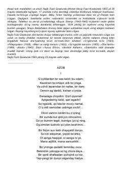

NFNajib Fozil Qisakurakning chuqur falsafiy va ruhiy izlanishlarga boy she'riy to'plami.
Ushbu to'plam atoqli turk shoiri va mutafakkiri Najib Fozil Qisakurakning o'zbek tiliga tarjima qilingan she'rlarini o'z ichiga oladi. Asarlarda inson ruhiyati, yolg'izlik, o'lim va ilohiy haqiqatni izlash kabi chuqur falsafiy mavzular badiiy mukammal tarzda tarannum etilgan.